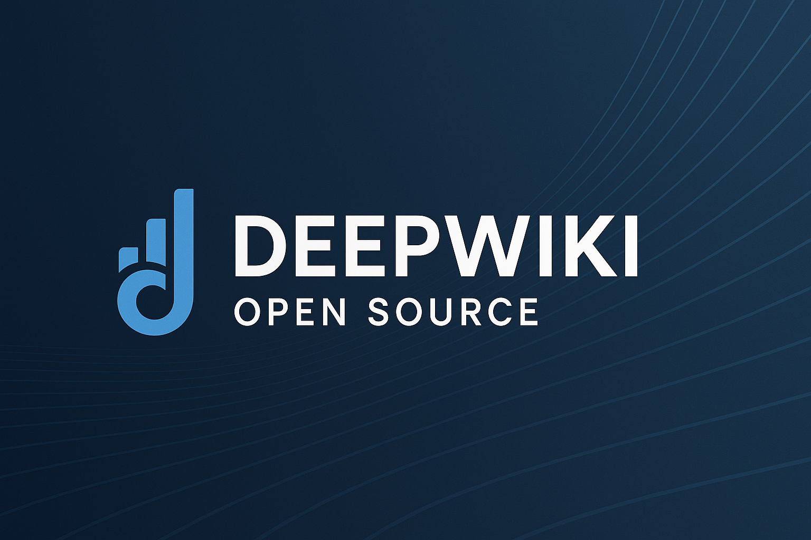
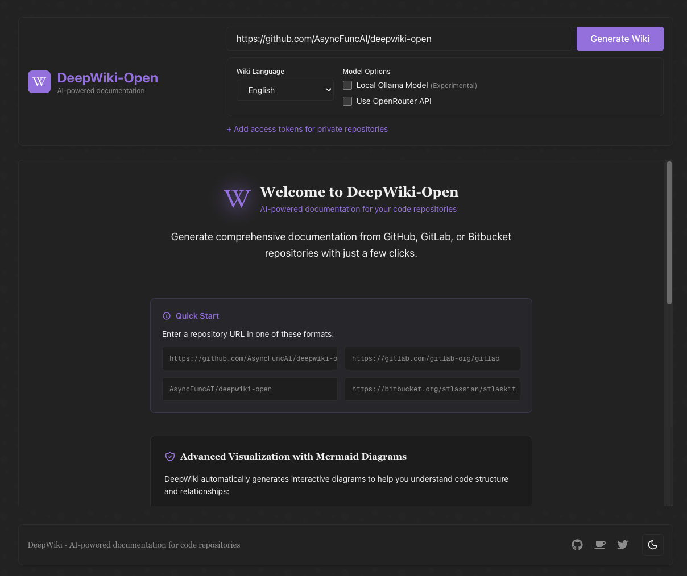

DeepWiki-Open + Ollama：本機儲存庫分析安裝踩坑與穩定設定指南

最近常看到一些開源專案直接用 DeepWiki 產生互動式文件，輸入儲存庫之後就能自動整理架構、補說明、再加上對話式查詢介面，對讀程式碼非常方便。
但 deepwiki.org 會把程式碼送到外部服務。對私有儲存庫或公司內部專案來說，這通常不是可接受的做法。
因此我改用 MIT 授權的 DeepWiki-Open，直接在本機自架。不過實際裝起來後，才發現從本機儲存庫掛載、Ollama 連線、Embedding、到模型設定一路都有坑。這篇就是把整套踩坑流程整理成可直接重現的版本。
環境概述
- 主機環境：macOS，本機儲存庫放在
/Users/yourname/Projects/... - DeepWiki-Open：跑在 Docker 容器內
- Ollama：跑在主機上，供容器透過
http://host.docker.internal:11434存取 - LLM：
minimax-m2:cloud - Embedding 模型：
nomic-embed-text
選 minimax-m2:cloud 的原因，是它在 Artificial Analysis 的開源模型排行榜 表現不錯，推論速度和程式碼任務表現都夠用。Embedding 則選 nomic-embed-text，主要是免費、輕量，而且 CPU 也能跑。
前置準備
先確認你已經安裝好以下元件：
Ollama 啟動後，先把模型抓下來：
# LLM
ollama pull minimax-m2:cloud
# Embedding
ollama pull nomic-embed-text
安裝 DeepWiki-Open
先把專案抓下來：
git clone https://github.com/AsyncFuncAI/deepwiki-open.git
cd deepwiki-open
接著修改 docker-compose.yaml。這份設定的重點只有兩個：
- 把本機儲存庫掛載進容器
- 讓容器能連到主機上的 Ollama
services:
deepwiki:
build:
context: .
dockerfile: Dockerfile
ports:
- "8001:8001" # API
- "3000:3000" # UI
environment:
- DEEPWIKI_AUTH_MODE=false
- OLLAMA_HOST=http://host.docker.internal:11434
- DEEPWIKI_EMBEDDER_TYPE=ollama
- DEEPWIKI_GENERATOR_TYPE=ollama
- EMBEDDING_MODEL=nomic-embed-text
- LLM_MODEL=minimax-m2:cloud
- OPENAI_API_KEY=sk-fake-dummy
- OPENAI_BASE_URL=http://host.docker.internal:11434/v1
volumes:
- ~/.adalflow:/root/.adalflow
- /Users/yourname/Projects:/mnt/local-repos:rw
- ./api/config:/app/api/config:ro
啟動：
docker compose up -d

踩坑 1：本機儲存庫 404 / Directory not found
症狀
UI 輸入本機路徑後，直接報錯：
Local repository API error (404): {"error":"Directory not found: /Users/yourname/Projects/"}
原因
DeepWiki 後端跑在容器裡，容器看不到主機上的 /Users/...。如果沒有事先掛載，直接輸入主機路徑一定會 404。這也是 GitHub issue #323 常見的問題。
解法
先把主機路徑掛載到容器，例如：
- 主機路徑：
/Users/yourname/Projects - 容器路徑：
/mnt/local-repos
之後在 UI 裡要輸入的是容器內路徑：
/mnt/local-repos/my-project
踩坑 2：docker-compose 驗證錯誤
症狀
services.deepwiki additional properties 'services' not allowed
原因
YAML 結構寫錯，把 services: 又巢狀放進 services.deepwiki: 裡面。這是 Docker Compose 常見的結構驗證錯誤。
解法
把 services: 放回最外層，並用下面指令先驗證：
docker compose config
踩坑 3：Failed to validate the authorization code
症狀
Failed to validate the authorization code
原因
服務開了驗證模式，UI 需要 auth code 才能產生文件。
解法
如果是自己本機使用，直接關掉：
- DEEPWIKI_AUTH_MODE=false
踩坑 4：明明選 Ollama，卻還是要求 OPENAI_API_KEY
這是整個流程裡最容易卡住的一段。
症狀 A
OPENAI_API_KEY environment variable is not set...
症狀 B
ValueError preparing retriever: Environment variable OPENAI_API_KEY must be set
原因
某些版本的 DeepWiki-Open，或它底層相依套件使用的 OpenAI 相容層，會在建立 Embedding 或 Retriever 時先硬檢查 OPENAI_API_KEY，即使你實際上要走的是 Ollama。這也是 GitHub issue #175 很多人碰到的問題。
解法
最穩的做法是直接走 OpenAI 相容端點，讓 DeepWiki 以為自己在呼叫 OpenAI，但實際上全都打到 Ollama：
- OPENAI_API_KEY=sk-fake-dummy
- OPENAI_BASE_URL=http://host.docker.internal:11434/v1
如果只設環境變數還是失敗，補一份 api/config/embedder.json，強制指定 Embedding 用的客戶端：
{
"embedder": {
"client_class": "OllamaClient",
"model_kwargs": {
"model": "nomic-embed-text"
}
}
}
這樣可以直接覆蓋底層客戶端的選擇邏輯，避免流程又繞回 OpenAI。
踩坑 5：模型不存在，連帶出現 No valid XML found in response
症狀
POST http://host.docker.internal:11434/api/chat "HTTP/1.1 404 Not Found"
Error: model 'qwen3:1.7b' not found (status code: 404)
No valid XML found in response
原因
DeepWiki 的模型名稱可能同時來自三個地方：
api/config/generator.jsondocker-compose.yaml的LLM_MODEL- UI 前端的模型選擇器
只要其中一處指定的模型名稱和 Ollama 實際拉下來的名稱不一致，Ollama 就會回 404。前端接不到預期回應格式時，就可能顯示 No valid XML found in response，這個訊息非常容易誤導。
解法
先確認模型真的存在，而且名稱完全一致：
# 如果你要用 qwen3:1.7b
ollama pull qwen3:1.7b
# 如果你要用本文的設定
ollama pull minimax-m2:cloud
再固定在 docker-compose.yaml：
- LLM_MODEL=minimax-m2:cloud
如果你已經在環境變數指定模型，建議不要再用 UI 選擇器切來切去，避免設定來源混在一起。
踩坑 6：Embedding 遇到超大檔，出現 context length exceeded
症狀
日誌可能會看到大量訊息：
Failed to get embedding for document '...babel-polyfill.min.js', skipping
Failed to get embedding for document '...vuetify.min.js', skipping
Failed to get embedding for document '...firebase-app.js', skipping
或者 Ollama 直接回：
the input length exceeds the context length (status code: 500)
原因
這類壓縮後的前端資產或第三方套件檔案 token 數量太大，超過 Embedding 模型的 context window。DeepWiki 通常會直接跳過，或做退避重試。
解法
大多數情況下，這不會影響主要結果，因為 DeepWiki 還是會替其他正常原始碼建立索引。若你想把雜訊降到最低，可以在 api/config/repo.json 主動排除大型目錄或壓縮後資產：
{
"excluded_dirs": ["node_modules/", "vendor/", "dist/", "build/"],
"excluded_files": ["*.min.js", "*.min.css", "*.bundle.js"]
}
第一次跑之前先整理排除規則，通常能讓索引過程更乾淨也更快。
踩坑 7：檔案編碼不是 UTF-8，出現 UnicodeDecodeError
症狀
'utf-8' codec can't decode byte 0xa5 ... invalid start byte
原因
舊專案裡有些 .js、.txt 或設定檔可能不是 UTF-8，常見像是 Big5、CP950 或 Windows-1252。DeepWiki 在匯入階段用 UTF-8 讀取時，就會直接失敗。
解法
通常只有兩種實際做法：
- 先把檔案轉成 UTF-8
- 直接把這些歷史檔案排除在索引之外
如果那些檔案本來就不是你想分析的核心內容，第二種通常比較省時間。
全流程檢查清單
正式跑之前，建議依序確認：
ollama list裡已經看得到nomic-embed-text和你要用的 LLMdocker-compose.yaml裡有OPENAI_API_KEY=sk-fake-dummy- UI 輸入的是容器內路徑，例如
/mnt/local-repos/my-project - 啟動後，日誌有出現
Embedding documents (X/Y)之類的進度訊息
如果 Embedding 階段還是報錯，再補上 api/config/embedder.json，強制指定 OllamaClient。
怎麼判斷「已完成」而不是「只是 UI 卡住」
DeepWiki 的 UI 有時候會讓人誤以為流程還沒結束，但真正可信的是後端日誌。
代表索引完成的關鍵日誌
Loaded XXX documents from existing database
Embedding validation complete: XXX/XXX
Index built with XXX chunks
FAISS retriever created successfully
Retriever prepared for /mnt/local-repos/...
UI 卡在「驗證 Wiki 結構」怎麼辦
先確認三件事：
- 日誌裡是否已出現
Retriever prepared - LLM 模型是否真的存在，而且 Ollama 可正常呼叫
- 是否已開啟 OpenAI 相容模式，也就是 fake key 加上
OPENAI_BASE_URL
很多時候不是生成真的失敗，而是前端狀態沒有同步更新。
最終穩定設定
| 項目 | 設定 |
|---|---|
| Embedding 模型 | nomic-embed-text |
| LLM | minimax-m2:cloud |
| 相容設定 | OPENAI_API_KEY=sk-fake-dummy + OPENAI_BASE_URL=http://host.docker.internal:11434/v1 |
| 儲存庫路徑 | 一律使用容器內路徑 /mnt/local-repos/... |